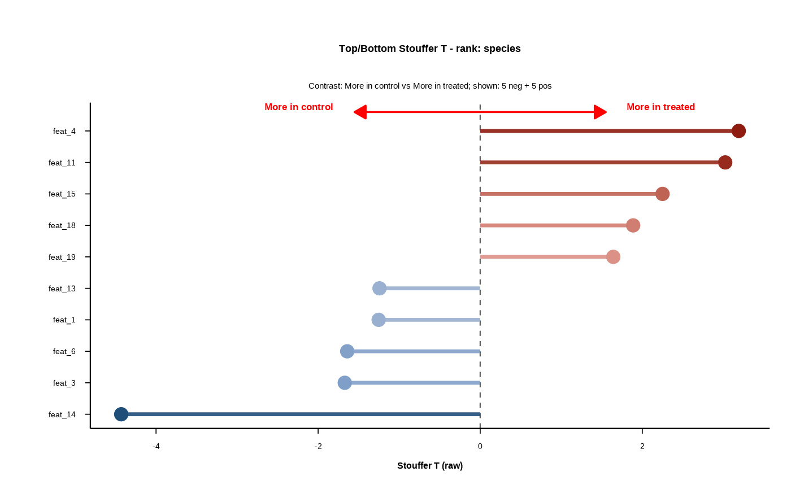

Builds a forest plot highlighting the most extreme positive and negative
DELTA/Stouffer statistics within a chosen rank. The plot shows the top
n_pos_each features on the positive side and the top n_neg_each
features on the negative side, ordered by the selected statistic
(statistic_to_plot). This provides a compact summary of which features
shift most strongly between the two groups for a given rank.
Usage
forestplot(
results_tbl,
rank_of_interest,
statistic_to_plot = c("T", "T_stand", "Z_from_p"),
n_neg_each = 15,
n_pos_each = 15,
filter_significant = "none",
sig_level = 0.05,
left_label = "More in group1",
right_label = "More in group2",
arrow_length_frac = 0.35,
label_x_gap_frac = 0.06,
y_pad = 0.6,
label_y_offset = 0,
label_vjust = -0.3,
arrow_color = "red",
arrow_linewidth = 0.6,
arrow_head_length_mm = 3,
use_diverging_colors = FALSE,
base_text_pt = 12,
font_family = "Montserrat",
seg_width = 1.2,
point_size = 3.6,
show_grid = FALSE
)Arguments
- results_tbl
Data frame/tibble with at least:
rank, feature, group1, group2, design, T_obs, p_perm.- rank_of_interest
Character scalar specifying the rank to plot (e.g.,
"species").- statistic_to_plot
Which statistic to rank/plot:
"T"(rawT_obs),"T_stand"(permutation-standardized), or"Z_from_p"(signed Z from permutation p).- n_neg_each
Number of most negative features to show. Default 15.
- n_pos_each
Number of most positive features to show. Default 15.
- filter_significant
Column name to filter on, or
"none"to disable filtering. If the column is numeric, keep rows wherecol <= sig_level.- sig_level
Significance threshold used when
filter_significantis numeric. Default 0.05.- left_label
Text for the left arrow/side label.
- right_label
Text for the right arrow/side label.
- arrow_length_frac
Fraction of max \(|T|\) used as half-length of arrows.
- label_x_gap_frac
Horizontal gap for arrow labels beyond arrow tips (fraction of max \(|T|\)).
- y_pad
Vertical padding above the top category for arrows/labels (y-axis units).
- label_y_offset
Additional vertical offset for arrow-end labels (y-axis units).
- label_vjust
Vertical justification for arrow labels (passed to
annotate()).- arrow_color
Arrow/label color.
- arrow_linewidth
Arrow line width.
- arrow_head_length_mm
Arrow head length in mm.
- use_diverging_colors
Logical; if
TRUE, lines/points are shaded blue (negative) to red (positive) with higher contrast; otherwise monochrome.- base_text_pt
Base text size in points for the plot.
- font_family
Font family for plot text.
- seg_width
Segment line width for the horizontal bars.
- point_size
Point size for feature markers.
- show_grid
Logical; show major/minor grid lines.
Value
A list with:
data- tibble used for plotting (selected top/bottom items),plot- ggplot object.
Details
The y-axis lists feature names (sorted by the chosen statistic), and the x-axis shows the signed effect size for each feature. Each feature is drawn as a horizontal segment from zero to its statistic value, with a point at the end of the segment. A dashed vertical line marks zero to separate negative from positive shifts. The subtitle reports the contrast (group1 vs group2) and how many negative/positive features are shown.
If use_diverging_colors = TRUE, segments/points are colored by
magnitude on a blue-to-red scale (negative to positive), otherwise a single
color is used. The arrow annotations at the top label the direction of
enrichment for each group and help interpret the sign of the statistic.
statistic_to_plot controls the statistic used for both ranking and
plotting: raw T_obs, permutation-standardized T_obs_stand, or
Z_from_p (signed Z from permutation p-values). For calibrated
inference or cross-figure comparability, prefer permutation Z-based results
or T_stand.
Examples
# in this example we mock the output of compute_delta with a simple
# data.frame - it works the same
set.seed(1)
n <- 20
results_tbl <- data.frame(
rank = rep("species", n),
feature = paste0("feat_", seq_len(n)),
group1 = "control",
group2 = "treated",
design = "case-control",
T_obs = rnorm(n, sd = 2),
p_perm = runif(n),
T_obs_stand = rnorm(n),
Z_from_p = qnorm(1 - runif(n) / 2) * sign(rnorm(n))
)
out <- forestplot(
results_tbl,
rank_of_interest = "species",
statistic_to_plot = "T",
n_neg_each = 5,
n_pos_each = 5,
left_label = "More in control",
right_label = "More in treated",
use_diverging_colors = TRUE,
font_family = "sans"
)
print(out$plot)
